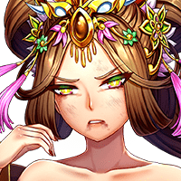
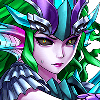
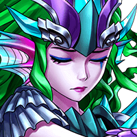

The Naga press on, instruments of their goddess's will, in spite of their mounting casualties.
Eventually, Sero-Anya manages to cut a swath through to that fateful pedestal where Tevarius had last clashed with the high priest.
A dull shimmer of light scintillates along its surface as the goddess-girl scrambles up.


The Queen Mother, though injured from the previous assault, floats defiantly between the raging deep goddess and the dragon spirit.
Raising an arm to shield Tevarius behind her, she glares silently at her adversary.
N'an-Wang-Mu
I am your opponent now.
This time, the Queen Mother blocks off the assault that had knocked her out of the sky before.
Jade green energy crackles across the tentacle, shattering it from the inside and crumbling in a shower of dust over the two goddesses.
N'an-Wang-Mu
You know nothing, wretched creature.
N'an-Wang-Mu
The land we protect is more than just a land.
N'an-Wang-Mu
It is the collective desire to survive...but more than that, to thrive.
N'an-Wang-Mu
It was compassion that saved me from my fate, blind and shamed outside the gates of the Pagoda I now reside...
N'an-Wang-Mu
...and it was faith that made me Queen Mother.
N'an-Wang-Mu
That I would look after them as they did me.
N'an-Wang-Mu
Faith is what ties us to this land!
Tsovinar
Your faith won't save you here!
Tevarius slips in and out of consciousness, and in his blurred vision he could barely make out Sero-Anya.
From his throat no sound came, and he merely watches the weeping girl with what little light remained in his golden eyes.
A hundred, a thousand things he had wanted to say to the girl he looked after for this short time...
Ever since Juno-Seto had awakened him, his purpose in life had been hazy at best.
In a world so changed by the passage of time, only he remained unmoving—unaffected.
Returning thus to a land he claimed as his own was nothing more than self-assurance...
...and deep down, that apathy, that weariness in making up for lost time, was more than Tevarius could bear.
Darkness was beginning to sound like a welcome alternative...
...if not for the sudden appearance of Sero-Anya.
From their first meeting, the dragon spirit knew from instinct this girl and Juno-Seto were linked by the same soul.
A being of pure light and radiance...
An innocent child to protect.
Sero-Anya
Tev! No, don't leave me!

Tsovinar
...!
Tsovinar turns her attention from her quarry, not that the husk of the Queen Mother—thoroughly blighted by her mark—posed any further danger to her.
Something about the girl's grief stirred a familiar feeling in the deep goddess's alien mind—
one she had experienced only moments ago.

Tsovinar
... ...
Tsovinar
What...What is this?
Tsovinar
This feeling...I don't...
Tsovinar
I don't understand.
As Sero-Anya curls up around Tevarius, dark energy begins to coalesce around her tiny frame,
the final result of an immense psychic stress.
A figure manifesting in purple shadow tears itself away and assumes the smiling visage of the Voidbringer.
Ensa-Taya
Finally. I've waited long enough!
Ensa-Taya
And now...no one can stop me!


{kind=link}
{kind=link}
{kind=link}
{kind=link}
{kind=link}